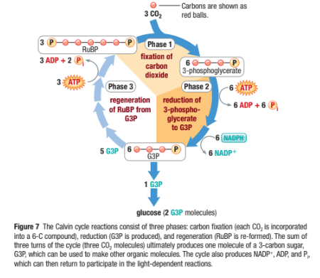

Pathways of Photosynthesis
Callout
The Process of Photosynthesis
Phase 1
The Light-Dependent Reactions: Generating ATP and NADPH
-
The overall purpose of the light-dependent reactions is to convert light energy into chemical energy. This chemical energy will be used by the Calvin cycle to fuel the assembly of sugar molecules.
-
The light-dependent reactions use energy from sunlight to produce oxygen and convert ADP and NADP+ into the energy carriers ATP and NADPH.
The Light-Dependent Reactions: Generating ATP and NADPH
6.png)
-
The light-dependent reactions encompass the steps of photosynthesis that directly involve sunlight.
-
The light-dependent reactions occur in the thylakoids of chloroplasts.
Callout
The Light-Dependent Reactions: Generating ATP and NADPH
-
Thylakoids contain clusters of chlorophyll and proteins known as photosystems.
-
Photosystems absorb sunlight and generate high-energy electrons that are then passed to a series of electron carriers embedded in the thylakoid membrane.
PHOTOSYSTEM II
-
Light energy is absorbed by electrons in the pigments within photosystem II, increasing the electrons’ energy level.
-
The high-energy electrons are passed to the electron transport chain, a series of electron carriers that shuttle high-energy electrons during ATP-generating reactions.
-
The thylakoid membrane provides new electrons to chlorophyll from water molecules.
-
Enzymes of the inner surface of the thylakoid break up water molecules into 2 electrons, 2 H+ ions, and 1 oxygen atom.
-
The 2 electrons replace the high-energy electrons that have been lost to the electron transport chain.
-
Oxygen is released into the air. This reaction is the source of nearly all of the oxygen in Earth’s atmosphere.
-
The H+ ions are released inside the thylakoid.
Electron Transport Chain
-
Energy from the electrons is used by proteins in the electron transport chain to pump H+ ions from the stroma into the thylakoid space.
-
At the end of the electron transport chain, the electrons pass to photosystem I.
Callout
PHOTOSYSTEM I
-
Because some energy has been used to pump H+ ions across the thylakoid membrane, electrons do not contain as much energy as they used to when they reach photosystem I.
-
Pigments in photosystem I use energy from light to reenergize the electrons.
-
At the end of a short second electron transport chain, NADP+ molecules in the stroma pick up the high-energy electrons and H+ ions at the outer surface of the thylakoid membrane to become NADPH.
Hydrogen Ion Movement and ATP Formation
-
H+ ions accumulate within the thylakoid space from the splitting of water and from being pumped in from the stroma.
-
The buildup of H+ ions make the stroma negatively charged relative to the space within the thylakoids.
-
This gradient, the difference in both charge and H+ ion concentration across the membrane, provides the energy to make ATP.
-
H+ ions cannot directly cross the thylakoid membrane. However, the thylakoid membrane contains a protein called ATP synthase that spans the membrane and allows H+ ions to pass through it.
-
Powered by the gradient, H+ ions pass through ATP synthase and force it to rotate.
-
As it rotates, ATP synthase binds ADP and a phosphate group together to produce ATP.
-
This process, called chemiosmosis, enables light-dependent electron transport to produce not only NADPH (at the end of the electron transport chain), but ATP as well.
The Light-Dependent Reactions: Generating ATP and NADPH
-
The light-dependent reactions produce oxygen gas and convert ADP and NADP+ into the energy carriers ATP and NADPH.
-
ATP and NADPH provide the energy needed to build high-energy sugars from low-energy carbon dioxide.
The Light-Dependent Reactions: Generating ATP and NADPH
The Light-Independent Reactions: PRODUCING SUGARS
CO2 is a fully oxidized carbon molecule and thus contains no usable energy. On the other hand, sugar molecules such as glucose and sucrose are highly reduced. They contain many C–H bonds and thus are an abundant source of energy. In the stroma of the chloroplast, a series of 11 reactions uses NADPH to reduce CO2 into sugar. The overall process is endergonic, requiring energy supplied by the hydrolysis of ATP. These 11 enzyme-catalyzed (or light-independent) reactions are collectively known as the Calvin cycle. The Calvin cycle is by far the most dominant pathway on Earth by which CO2 is fixed into carbohydrates.
As you will learn in Section 5.4, many plants use a small number of additional light-independent steps immediately prior to the Calvin cycle.
How the Calvin Cycle Produces Carbohydrates
The Calvin cycle can be divided into three phases: fixation, reduction, and regeneration.
Callout

Phase 1: Carbon fixation. Carbon fixation is the conversion of carbon from an inorganic to an organic form. At the beginning of the Calvin cycle, CO2, an inorganic compound, reacts with a molecule of ribulose-1,5-bisphosphate (RuBP), a 5-carbon sugar, to produce two 3-carbon molecules of 3-phosphoglycerate.
This single step has monumental significance for life on Earth. Every carbon atom in every cell of virtually all living things has taken part in this chemical reaction. This type of photosynthesis is called a C3 metabolism from the two 3-carbon molecules formed.
In Section 5.4 you will learn about alternative mechanisms of photosynthesis.
Phase 2: Reduction. In Phase 2, each molecule of 3-phosphoglycerate gets an additional phosphate added from the hydrolysis of ATP. This molecule is subsequently reduced by high-energy electrons from NADPH, producing glyceraldehyde-3-phosphate (G3P).
Phase 3: Regeneration. In a multi-step process, some of the G3P molecules are combined and rearranged to regenerate the RuBP that is required to start the cycle over again.
In each complete Calvin cycle, one molecule of CO2 is converted into one reduced carbon—essentially one CH2O unit of carbohydrate. However, it takes three cycles to produce something the cell can actually use—one extra molecule of the 3-carbon sugar, G3P. To account for this, Figure 7 is a summary of three cycles, tracking the fate of three carbon atoms.
Timeline
-
In 3 complete turns of the cycle, 3 CO2 (3 carbons) are combined with 3 molecules of RuBP (15 carbons), to produce 6 molecules of 3-phosphoglycerate (18 carbons). These go on to yield 6 molecules of G3P (totaling 18 carbons). Five of the 6 molecules of G3P (totaling 15 carbons) are used to regenerate the 3 Rub molecules (15 carbons). Thus, the cycle generates 1 molecule of G3P (3 carbons) after 3 turns. The production of this one molecule of G3P is the ultimate goal of photosynthesis. G3P is a high-energy carbon that contains the raw material from which all other organic plant compounds are synthesized. For the synthesis of this one G3P, the Calvin cycle requires a total of nine molecules of ATP and six molecules of NADPH. The NADP+ADP, and Pi that are formed during the reduction phase, as well as the ADP and Pi formed during the regeneration phase, of the Calvin cycle, are regenerated to NADPH and ATP by the light reactions. These numbers must be doubled to 18 ATP and 12 NADPH for a single glucose molecule to be produced from two G3P. Rubisco: The Most Abundant Protein on Earth Before concluding this overview of the Calvin cycle, turn your attention to a special chemical—the chemical that is responsible for the very first step in Phase 1 and the fixing of carbon. Ribulose-1,5-bisphosphate carboxylase oxygenase, or RuBisCO (commonly spelled rubisco), is the enzyme that catalyzes the first reaction of the Calvin cycle. It is arguably the most important enzyme in the biosphere. By catalyzing CO2 fixation in all photoautotrophs, it provides the source of organic carbon molecules for most of the world’s organisms. It begins the conversion of about 100 billion tonnes of CO2 into carbohydrates annually.
-
There are so many rubisco molecules in chloroplasts that the enzyme makes up 50 % or more of the total protein of plant leaves. As such, rubisco is also the world’s most abundant protein, estimated to total some 40 million tonnes worldwide equivalent to about 6 kg per person on Earth.
A Diversity of Organic Products the G3P molecule formed by three turns of the Calvin cycle is the starting point for the production of a wide variety of organic molecules. Complex carbohydrates, such as glucose and other simple sugars (monosaccharides), are made from G3P by reactions that, in effect, reverse the first half of glycolysis. Once produced, the Mono sac charides may enter biochemical pathways that make disaccharides such as sucrose, polysaccharides such as starches and cellulose, and other complex carbohydrates.
Other biochemical pathways manufacture amino acids, fatty acids and lipids, and nucleic acids. The reactions that form these products occur both within chloroplasts and in the surrounding cytosol and nucleus. Sucrose, a disaccharide that consists of glucose bonded to fructose, is the main form in which the products of photosynthesis circulate from cell to cell in higher plants. In most higher plants, organic nutrients are stored as sucrose, starch, or a combination of the two in proportions that depend on the plant species. Sugar cane
and sugar beets, which contain stored sucrose in high concentrations, are the main sources of the sucrose you use as table sugar.